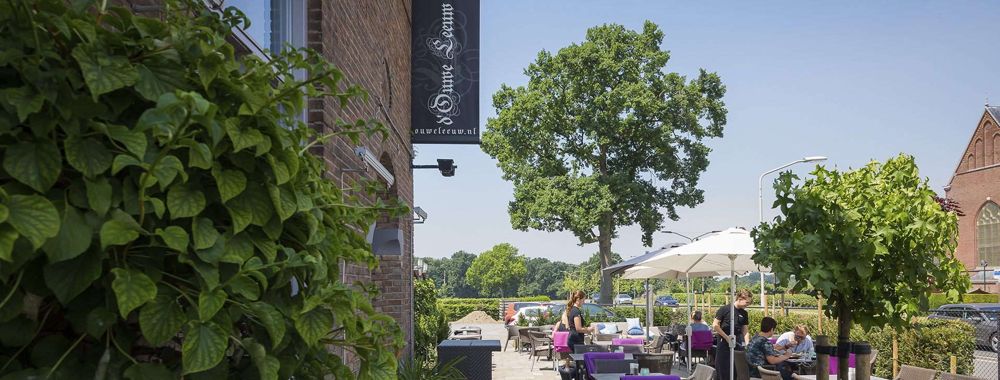
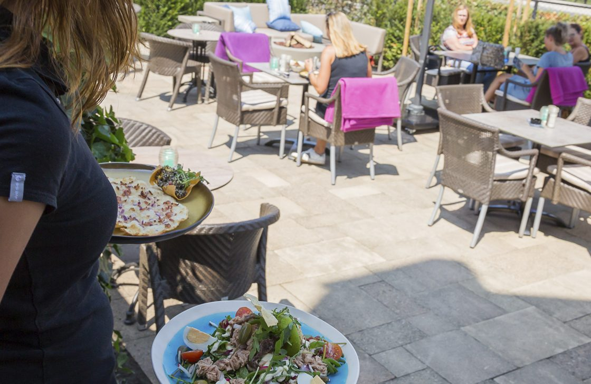
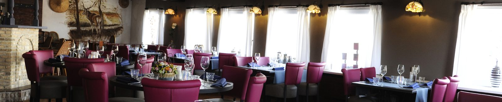
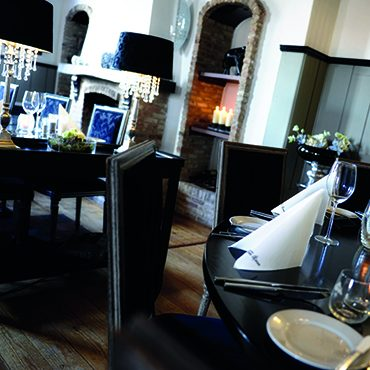
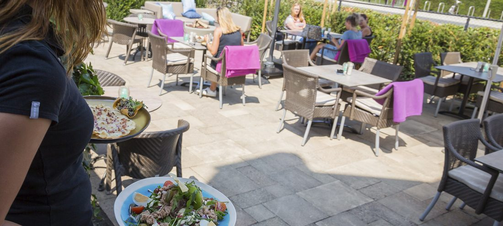

Romantisch en gezellig dineren aan de Brabantse Wal
Franse en internationale keuken, van eenvoudig tot exclusief. Na een dag fietsen of wandelen schuift u bij ons aan in een ongedwongen sfeer.
Gezellig, gemoedelijk, eten was super!★★★★★ Alise, via Google
Specialiteit van het huis: traditioneel Balkan menu
Een driegangenmenu zoals het in de Balkan op tafel komt. De lamsbout gaart urenlang in de oven, daarom maken we dit menu alleen op bestelling.
Balkanska plata
Balkan plateauDiverse kleine authentieke gerechten uit de Balkan: suho meso (gerookte ribeye), ajvar, sudžuk, halloumi, ćevapčići, aïoli, olijven en grillbrood. Met een šljivovica erbij, wel een beetje sterk!
Jagnjeća plećka iz rerne
Gegaarde lamsbout uit de oven, 600 gram p.p.Langzaam gegaard met knoflook, tijm, roseval aardappelen en ui. Met jus en een frisse šopska salade van tomaat, komkommer, paprika, ui en geraspte witte kaas.
Baklava sa orasima
Bosnische baklava met walnotenMet pistache-vanille-ijs, crème anglaise en slagroom.
ofPalačinka: pannenkoek met warme Callebaut chocoladesaus, walnoot en vanille-ijs.
Vanaf 2 personen, enkele dagen vooraf bestellen. Prijs op aanvraag.
Reserveren


Gastvrijheid en ambiance
Bistro d'Ouwe Leeuw ligt in een prachtige omgeving aan de Brabantse Wal. Na een dag fietsen of wandelen kunt u bij ons terecht voor een gezellige avond dineren in een ongedwongen sfeer.
Gastvrijheid staat bij ons hoog in het vaandel. In de zomer geniet u op ons terras, in de zon of in de schaduw. In de winter zit u binnen in een huiselijke ambiance.
- Franse en internationale keuken
- Terras in zon en schaduw
- Kindergerechten
- Thuisbezorgd via de Sparerib-runner
Wat onze gasten zeggen
Super lekker. Wildseizoen begonnen.Chris G., via Google
Een bevestigende glimlach van de bazin maakte mijn avond compleet.Roger, via Restaurants.nl
Great staff, amazing food!Stefan, via Google
Reserveer een tafel
Reserveren gaat het snelst telefonisch. Mailen kan natuurlijk ook.
Bistro d'Ouwe Leeuw
4631 BC Hoogerheide